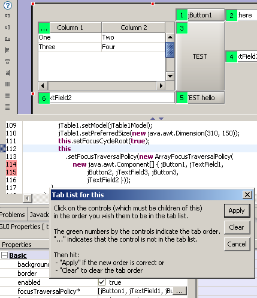

Setting tab order in Swing Containers
|
It
is now possible to set the tab order for Swing Containers by
selecting the children of the Composite in the desired order. (The "tab
order" is the order in which the components will obtain focus when
hitting the TAB key to move between components).
First, click on the "focusTraversalPolicy"
property of the selected Composite in the
"GUI Properties" view (this property may be in the "Hidden" category -
you can right click on it and move it to the "Basic" category) and
click on the editor button to display a popup
dialog with instructions and "Apply", "Clear" and "Cancel" buttons.
Then click on the children of the container in the order you wish them
to be in the tab list. The little green boxes will display numbers
indicating the order. If you make a mistake, hit the "Clear" button.
When the order is correct, hit the "Apply" button and the changes will
be applied to the code.
Jigloo will create a new class (com.cloudgarden.resource.ArrayFocusTraversalPolicy) in your project when it sets the tab order.

|
| Useability and Bug fixes: |
- When
SHIFT is held down, after adding a component from the component
palette, then you will be able to add another component of the same
type without going back to the palette. Eg, if you add a button,
release the mouse, then press SHIFT, the cursor will change to a
cross-hair and if you click with the mouse again a new button will be
added to the form.
- HeadlessException thrown sometimes for Swing GUIs - fixed
- Code sometimes inserted at wrong position - fixed
- Problem parsing code like "button.setText(Resource.getText("button.text"))" - fixed
- Problem with Jigloo interfering with fast-views - fixed
- Swing compound border not recognized - fixed
- Problem with SWT_AWT rendering and generated code - fixed
|
|